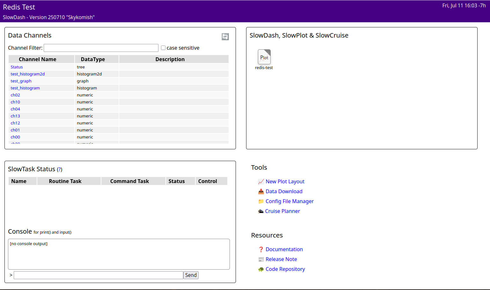

RunNumber:12,Lapse:34,Operator:me みたいなデータ)
を表形式で表示ExampleProjects/DataSourceTest/Redis に Redis Server
と，SlowDash と，テストデータ生成スクリプトが全て入った
docker-compose.yaml があるので，これを使います：
$ cd PATH/TO/SLOWDASH/ExampleProjects/DataSourceTest/Redis
$ docker compose upシステムが立ち上がったら，ブラウザで
http://localhost:18881 にアクセスしてください：
$ firefox http://localhost:18881ちなみに，docker-compose.yaml
の中身はこんな感じです：
services:
redis:
image: redis:8
restart: always
ports:
- "6379:6379"
- "8001:8001"
slowdash:
image: slowproj/slowdash
volumes:
- .:/project
ports:
- "18881:18881"
environment:
- DB_URL=redis://redis:6379/12
testdata:
image: slowproj/slowdash
command: python /slowdash/utils/generate-testdata.py --db-url=redis://redis:6379/12Redis Insight も入っているので，ブラウザで
http://localhost:8001 にアクセスすれば Redis
のデータを見られます．
$ git clone https://github.com/slowproj/slowdash
$ cd slowdash
$ make
$ source bin/slowdash-bashrc # 毎回やるか，`.bashrc` に書く以下のダミーデータ生成スクリプトは，既存の Redis データがあるとその内容と干渉する可能性があります．すでにデータがある場合はこの手順をスキップして，手持ちのデータを使う方がいいです．
すでにある Redis を使うならそのままでいいけれど，そうでないなら，コンテナを使うのがたぶん簡単です．
$ docker run -p 6379:6379 redisここでは，SlowDash に入っている Python ライブラリ SlowPy を使います．上記のデフォルトインストールで SlowDash 用の venv が作成されているので，最初にこれを activate してください．
$ slowdash-activate-venv # 普通に source PATH/TO/SLOWDASH/venv/bin/activate でも良いこれでダミーデータを生成するスクリプトが走るはずです：
$ cd PATH/TO/SLOWDASH/ExampleProjects/DataSourceTest/Redis
$ ./generate-testdata.shここでエラーがでなければ正常に走っているはずです．
上記のデータ生成コマンドを走らせたまま，別ウィンドウでコマンドライン
SlowDash を走らせてください． （もし bin/slowdash-bashrc の
source をしていなければ，してください．）
$ cd PATH/TO/SLOWDASH/
$ souce ./bin/slowdash-bashrc
$ cd ExampleProjects/DataSourceTests/Redis
$ slowdash channels
Running in venv at /PATH/TO/SLOWDASH/venv
[{"name": "Status", "type": "tree"}, {"name": "test_graph_01", "type": "graph"}, {"name": "test_histogram_01", "type": "histogram"}, {"name": "ch00", "type": "timeseries"}, {"name": "ch10", "type": "timeseries"}, {"name": "ch14", "type": "timeseries"}, {"name": "ch04", "type": "timeseries"}, {"name": "ch15", "type": "timeseries"}, {"name": "ch03", "type": "timeseries"}, {"name": "ch11", "type": "timeseries"}, {"name": "ch02", "type": "timeseries"}, {"name": "ch09", "type": "timeseries"}, {"name": "ch08", "type": "timeseries"}, {"name": "ch13", "type": "timeseries"}, {"name": "ch05", "type": "timeseries"}, {"name": "ch06", "type": "timeseries"}, {"name": "ch01", "type": "timeseries"}, {"name": "ch07", "type": "timeseries"}, {"name": "ch12", "type": "timeseries"}]ちゃんとデータが見えているので，ポート番号を指定して SlowDash をサーバーモードで走らせます：
$ slowdash --port=18881ブラウザで http://localhost:18881/ に接続
$ firefox http://localhost:18881/
左上の Data Channels には，Redis 中に保存されているデータの一覧が表示されています．
右上のアイコンは，作成済レイアウトです．クリックすると以下のような画面が表示されます．
動作テストに使った ExampleProjects/DataSourceTests/Redis
の SlowdashProject.yaml に設定を記述します． Redis
サーバのアドレス，ポート番号とデータベース番号を指定するだけです．
slowdash_project:
data_source:
url: redis://localhost:6379/1複数のデータベース番号を使いたいときは，data_source
を配列にできます．ただ，これは省略形式で，正式には，以下のようにデータ形式ごとにエントリを作ります．こうするとよりきめ細かくパラメータを設定できます．
slowdash_project:
name: RedisTest
title: Redis Test, Simple version
data_source:
url: redis://localhost:6379/
parameters:
hash: { db: 1 }
time_series:
- db: 2
- db: 3
suffix: '.second_TS'
object: { db: 1 }| エントリ名 | データ |
|---|---|
hash |
Redis ハッシュ値が SlowDash の Tree として読まれる |
time_series |
Redis TS 値が SlowDash の TimeSeries として読まれる |
object |
Redis JSON 値が SlowDash の Histogram / Graph / etc. として読まれる |
object_time_series |
Redis TS と Redis JSON を組み合わせた SlowDash 形式でオブジェクトの時系列が格納されている場合 |
複数のデーターベース間でキーの重複がある場合は，suffix
パラメータを指定すると，SlowDash
チャンネル名にサフィックスが付いて区別できます．
Redis TimeSeries で記録したデータは自動で検出され，チャンネルリストに表示されます．
Redis の通常の Key-Value でハッシュ値を記録した場合，SlowDash の Tree 型として取り込まれます．動作テスト例では左上のパネルに表示されています．
Redis JSON を使って特定の構造の JSON オブジェクトを記録すると SlowDash にヒストグラムやグラフとして認識されます．
Python のコードはこんな感じです：
import redis
r = redis.Redis('localhost', 6379, 1)
hist = {
'bins': { 'min': 0, 'max': 100 },
'counts': [ 3, 5, 8, 14, 11, 3, 6, 4, 4, 1 ]
}
r.json().set('hist00', '$', hist)あるいは，普通の Key-Value に，JSON 文字列で保存しても良いです (C++ とかからならこちらの方が便利かも)：
import redis
r = redis.Redis('localhost', 6379, 1)
hist = '''{
"bins": { "min": 0, "max": 100 },
"counts": [ 3, 5, 8, 14, 11, 3, 6, 4, 4, 1 ]
}'''
r.set('hist00', hist)JSON のデータ構造は以下のようになっています：
{
"bins": {"min": MIN, "max": MAX},
"counts": [C0, C1, C2, ...]
}counts があることにより，この JSON
がヒストグラムだと判別される．counts
配列の長さで決められる．{
"labels": [ XLABEL, YLABEL ],
"x": [x0, x1, x2, ...],
"y": [y0, y1, y2, ...],
}y があることにより，この JSON
がグラフだと判別される．Data Model を参照．
Redis TimeSeries と Redis JSON を組み合わせて実現されています．構造が面倒なので，SlowPy ライブラリを使うのが便利です．
こんな感じ：
import time
import numpy as np
from slowpy import Histogram
from slowpy.store import DataStore_Redis
datastore = DataStore_Redis('redis://localhost/2', retention_length=3600)
histogram = Histogram(nbins=20, range_min=-10, range_max=10)
while True:
for i in range(100):
h.fill(np.random.normal(5, 2))
# これ
datastore.append(histogram, tag='test_histogram_01')
time.sleep(1)ヒストグラムやグラフの時系列データは大量のキーバリューを作るので、専用のデータベースを使用した方が良いです．この例ではデータベース番号 2 番を使用しています．
ちなみに，append() の代わりに update()
とすると，時刻情報なしでチャンネルごとの最新値だけを同じキーで保存するようになります（上記の例）．